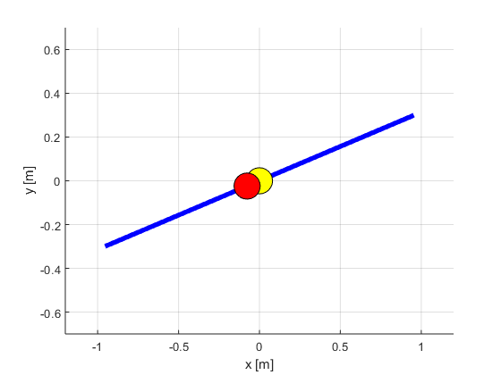
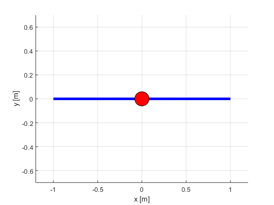

function [vars,times,solver] = ballandbeam
conf = struct;
conf.r_b = 1;
conf.theta_b = deg2rad(30);
conf.dtheta_b = deg2rad(50);
conf.tau_b = 20;
conf.L = 1;
conf.I = 0.5;
conf.J = 25*10^(-3);
conf.m = 2;
conf.R = 0.05;
conf.g = 9.81;
conf.costQ = eye(4);
conf.costR = 1;
varsfun = @(sh) bbvarsfun(sh, conf);
daefun = @(sh,x,~,u,p) bbeqfun(sh,x,u,conf);
pathcosts = @(ch,x,~,u,~) bbpathcosts(ch,x,u,conf);
solver = ocl.Solver([], varsfun, daefun, pathcosts, 'N', 50);
solver.setBounds('time', 0, 5);
solver.setInitialBounds('r' , -0.8);
solver.setInitialBounds('dr' , 0.3);
solver.setInitialBounds('theta' , deg2rad(5));
solver.setInitialBounds('dtheta' , 0.0);
solver.setInitialBounds('time' , 0);
solver.setEndBounds('r' , 0);
solver.setEndBounds('dr' , 0);
solver.setEndBounds('theta' , 0);
solver.setEndBounds('dtheta' , 0);
vars = solver.getInitialGuess();
[vars,times] = solver.solve(vars);
figure;
subplot(3,1,1);hold on;grid on;
plot(times.states.value,vars.states.r.value ,'Color','b','LineWidth',1.5)
plot(times.states.value,vars.states.dr.value ,'Color','r','LineWidth',1.5)
legend({'r [m]','dr [m/s]'})
plot(times.states.value, conf.r_b*ones(length(times)),'Color','b','LineWidth',1.0,'LineStyle','-.');
plot(times.states.value, conf.r_b*ones(length(times)),'Color','b','LineWidth',1.0,'LineStyle','-.');
subplot(3,1,2);hold on;grid on;
plot(times.states.value,rad2deg(vars.states.theta.value) ,'Color','b','LineWidth',1.5)
plot(times.states.value,rad2deg(vars.states.dtheta.value),'Color','r','LineWidth',1.5)
legend({'\theta [deg]','dtheta [deg/s]'})
plot(times.states.value, rad2deg( conf.theta_b.*ones(length(times))),'Color','b','LineWidth',1.0,'LineStyle','-.');
plot(times.states.value, rad2deg( -conf.theta_b.*ones(length(times))),'Color','b','LineWidth',1.0,'LineStyle','-.');
plot(times.states.value, rad2deg( conf.dtheta_b.*ones(length(times))),'Color','r','LineWidth',1.0,'LineStyle','-.');
plot(times.states.value, rad2deg(-conf.dtheta_b.*ones(length(times))),'Color','r','LineWidth',1.0,'LineStyle','-.');
subplot(3,1,3);hold on;grid on;
stairs(times.controls.value,vars.controls.tau.value,'Color','g','LineWidth',1.5)
plot(times.states.value, conf.tau_b.*ones(length(times)),'Color','g','LineWidth',1.0,'LineStyle','-.');
plot(times.states.value,-conf.tau_b.*ones(length(times)),'Color','g','LineWidth',1.0,'LineStyle','-.');
legend({'\tau [Nm]'})
xlabel('time');
bbanimate(times.states.value,vars.states.r.value,vars.states.theta.value,conf);
end
function bbvarsfun(sh, c)
sh.addState('r', 'lb', -c.r_b, 'ub', c.r_b );
sh.addState('dr');
sh.addState('theta', 'lb', -c.theta_b, 'ub', c.theta_b );
sh.addState('dtheta', 'lb', -c.dtheta_b, 'ub', c.dtheta_b );
sh.addState('time');
sh.addControl('tau', 'lb', -c.tau_b, 'ub', c.tau_b );
end
function bbeqfun(sh,x,u,c)
sh.setODE('theta' ,x.dtheta);
sh.setODE('dtheta',(u.tau - c.m*c.g*x.r*cos(x.theta) - 2*c.m*x.r*x.dr*x.dtheta)/(c.I + c.m*x.r^2));
sh.setODE('r' ,x.dr);
sh.setODE('dr' ,(-c.m*c.g*sin(x.theta) + c.m*x.r*x.dtheta^2)/(c.m + c.J/c.R^2));
sh.setODE('time' , 1);
end
function bbpathcosts(ch,x,u,c)
ch.add( x(1:end-1).'*c.costQ*x(1:end-1) );
ch.add( u.'*c.costR*u );
end
function bbanimate(times,rTrajectory,thetaTrajectory,c)
xbeam = c.L*cos(thetaTrajectory(1));
ybeam = c.L*sin(thetaTrajectory(1));
Xbeam = [-xbeam,xbeam];
Ybeam = [-ybeam,ybeam];
Xball = rTrajectory(1)*cos(thetaTrajectory(1));
Yball = rTrajectory(1)*sin(thetaTrajectory(1));
figure;hold on;grid on;
Beam = plot(Xbeam,Ybeam,'LineWidth',4,'Color','b');
plot(0,0,'Marker','o','MarkerEdgeColor','k','MarkerFaceColor','y','MarkerSize',22)
Ball = plot(Xball,Yball,'Marker','o','MarkerEdgeColor','k','MarkerFaceColor','r','MarkerSize',22);
axis([-1.2, 1.2, -0.7, 0.7]);
xlabel('x [m]');ylabel('y [m]');
snap_at = floor(linspace(2,length(times),4));
for i = 2:1:length(times)
xbeam = c.L*cos(thetaTrajectory(i));
ybeam = c.L*sin(thetaTrajectory(i));
Xbeam = [-xbeam,xbeam];
Ybeam = [-ybeam,ybeam];
Xball = rTrajectory(i)*cos(thetaTrajectory(i));
Yball = rTrajectory(i)*sin(thetaTrajectory(i));
set(Beam, 'XData', Xbeam);
set(Beam, 'YData', Ybeam);
set(Ball, 'XData', Xball);
set(Ball, 'YData', Yball);
if ~oclIsTestRun()
pause(times(i)-times(i-1));
end
if i == snap_at(1)
snapnow;
snap_at = snap_at(2:end);
end
drawnow
end
end
This is Ipopt version 3.12.3, running with linear solver mumps.
NOTE: Other linear solvers might be more efficient (see Ipopt documentation).
Number of nonzeros in equality constraint Jacobian...: 6424
Number of nonzeros in inequality constraint Jacobian.: 0
Number of nonzeros in Lagrangian Hessian.............: 2050
Total number of variables............................: 1096
variables with only lower bounds: 50
variables with lower and upper bounds: 847
variables with only upper bounds: 0
Total number of equality constraints.................: 1049
Total number of inequality constraints...............: 0
inequality constraints with only lower bounds: 0
inequality constraints with lower and upper bounds: 0
inequality constraints with only upper bounds: 0
iter objective inf_pr inf_du lg(mu) ||d|| lg(rg) alpha_du alpha_pr ls
0 2.5329714e-001 1.96e-001 4.95e-003 -1.0 0.00e+000 - 0.00e+000 0.00e+000 0
1 2.4176483e+001 1.89e-001 1.43e+003 -1.0 2.31e+002 - 3.33e-003 6.39e-002f 1
2 2.8449422e+001 1.85e-001 1.41e+003 -1.0 5.43e+001 - 6.67e-002 2.15e-002h 1
3 4.5202611e+001 1.65e-001 1.36e+003 -1.0 4.08e+001 - 3.43e-001 7.41e-002h 1
4 9.0858420e+001 1.11e-001 1.15e+003 -1.0 2.96e+001 - 2.15e-001 1.92e-001h 1
5 2.1759276e+002 1.93e-001 8.69e+002 -1.0 9.60e+000 - 4.09e-001 6.93e-001h 1
6 2.0302663e+002 6.53e-003 1.12e+002 -1.0 1.93e+000 - 8.44e-001 1.00e+000f 1
7 2.0155374e+002 8.41e-003 1.42e+001 -1.0 2.57e+000 - 2.54e-001 1.00e+000f 1
8 2.0265921e+002 9.82e-003 9.32e+000 -1.0 2.72e+000 - 6.13e-001 1.00e+000f 1
9 2.0385929e+002 1.37e-002 5.77e+000 -1.0 2.32e+000 - 5.04e-001 1.00e+000f 1
iter objective inf_pr inf_du lg(mu) ||d|| lg(rg) alpha_du alpha_pr ls
10 2.0460926e+002 2.02e-002 8.37e+000 -1.0 1.93e+000 - 6.57e-001 1.00e+000f 1
11 2.0327116e+002 3.57e-004 4.02e+000 -1.0 4.44e-001 0.0 1.00e+000 1.00e+000f 1
12 2.0352249e+002 1.02e-002 9.02e+000 -1.0 1.16e+000 - 1.00e+000 1.00e+000f 1
13 2.0265337e+002 5.75e-004 5.19e-001 -1.0 3.63e-001 -0.5 1.00e+000 1.00e+000f 1
14 2.0131076e+002 1.90e-002 2.68e+000 -1.7 7.52e+000 - 3.82e-001 2.24e-001f 2
15 1.9727231e+002 9.67e-003 1.10e+001 -1.7 2.99e+000 - 8.72e-001 1.00e+000F 1
16 1.9721080e+002 8.25e-003 9.79e+000 -1.7 5.20e+000 - 2.62e-001 1.12e-001f 2
17 1.9629400e+002 8.88e-004 9.01e-001 -1.7 4.65e-001 -1.0 6.79e-001 1.00e+000f 1
18 1.9625117e+002 1.92e-003 9.37e-001 -1.7 3.46e+000 - 3.97e-001 9.30e-002f 3
19 1.9625118e+002 3.85e-003 1.18e+000 -1.7 2.68e+000 - 6.98e-001 1.34e-001f 3
iter objective inf_pr inf_du lg(mu) ||d|| lg(rg) alpha_du alpha_pr ls
20 1.9599067e+002 1.81e-003 1.10e-001 -1.7 3.65e-001 - 1.00e+000 1.00e+000h 1
21 1.9531424e+002 2.54e-003 4.74e-001 -2.5 7.51e-001 - 9.94e-001 7.69e-001f 1
22 1.9501036e+002 1.15e-003 2.26e-001 -2.5 4.35e-001 - 1.00e+000 8.80e-001f 1
23 1.9493706e+002 2.78e-005 3.69e-003 -2.5 7.27e-002 - 1.00e+000 1.00e+000f 1
24 1.9488016e+002 9.26e-005 2.90e-001 -3.8 2.15e-001 - 1.00e+000 6.12e-001f 1
25 1.9485841e+002 1.29e-004 1.02e-001 -3.8 1.61e-001 - 1.00e+000 8.48e-001h 1
26 1.9485206e+002 2.35e-006 2.08e-002 -3.8 3.39e-002 - 9.31e-001 1.00e+000f 1
27 1.9485151e+002 1.88e-006 2.14e-004 -3.8 1.16e-002 - 1.00e+000 1.00e+000h 1
28 1.9485007e+002 2.22e-006 3.97e-002 -5.7 2.31e-002 - 9.59e-001 6.76e-001h 1
29 1.9484969e+002 8.70e-007 2.40e-002 -5.7 8.04e-003 - 9.93e-001 7.56e-001h 1
iter objective inf_pr inf_du lg(mu) ||d|| lg(rg) alpha_du alpha_pr ls
30 1.9484958e+002 3.06e-008 1.29e-005 -5.7 3.43e-003 - 1.00e+000 1.00e+000f 1
31 1.9484956e+002 9.12e-009 1.52e-004 -8.6 1.55e-003 - 9.71e-001 9.57e-001h 1
32 1.9484956e+002 2.72e-009 5.98e-007 -8.6 6.88e-004 - 1.00e+000 1.00e+000f 1
33 1.9484956e+002 1.37e-011 4.30e-006 -8.6 1.16e-004 -1.4 1.00e+000 1.00e+000h 1
34 1.9484956e+002 1.07e-014 1.87e-009 -8.6 5.23e-005 - 1.00e+000 1.00e+000H 1
Number of Iterations....: 34
(scaled) (unscaled)
Objective...............: 1.9484956114504607e+002 1.9484956114504607e+002
Dual infeasibility......: 1.8736259535928290e-009 1.8736259535928290e-009
Constraint violation....: 1.0672018824209317e-014 1.0672018824209317e-014
Complementarity.........: 2.5576188907999138e-009 2.5576188907999138e-009
Overall NLP error.......: 2.5576188907999138e-009 2.5576188907999138e-009
Number of objective function evaluations = 51
Number of objective gradient evaluations = 35
Number of equality constraint evaluations = 51
Number of inequality constraint evaluations = 0
Number of equality constraint Jacobian evaluations = 35
Number of inequality constraint Jacobian evaluations = 0
Number of Lagrangian Hessian evaluations = 34
Total CPU secs in IPOPT (w/o function evaluations) = 0.283
Total CPU secs in NLP function evaluations = 0.018
EXIT: Optimal Solution Found.
t_proc [s] t_wall [s] n_eval
my_solver 0.301 0.301 1
nlp_f 0 0 51
nlp_g 0.001 0.000999 51
nlp_grad_f 0 0 36
nlp_hess_l 0.016 0.0156 34
nlp_jac_g 0 0 36
 

ans =
OclAssignment with content:
{
Variable:
Size: [1105 1]
Type: OclStructure
Children: states, integrator, controls, parameters, h
Value: [-0.8;0.3;0.0872665;0;0;-0.795391;0.297804;0.0869711;-0.0385059;0.0154181;-0.781052;0.290966;0.0819621;-0.169554;0.0641331;-0.770863;0.28622;0.0741619;-0.273575;0.099439;-20;0.099439;-0.770863;0.28622...
}